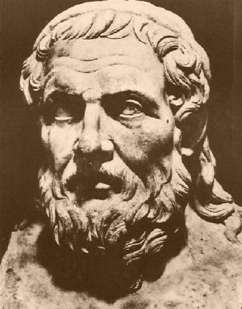
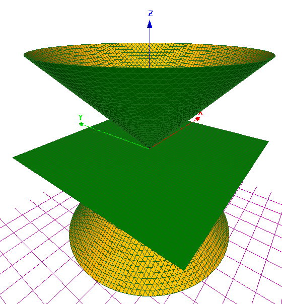
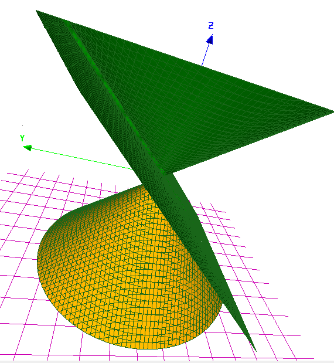
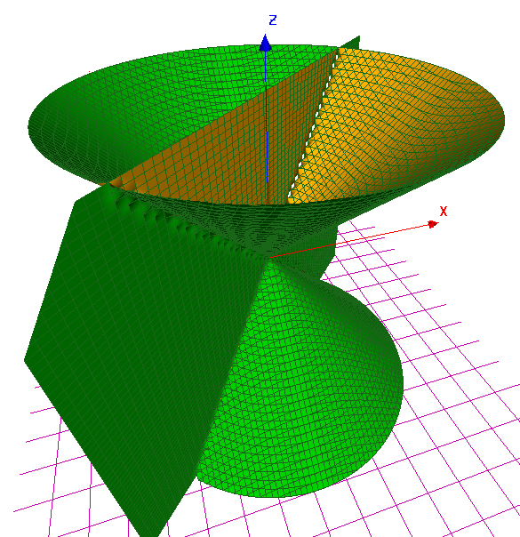
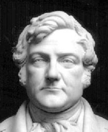

| Choisissez votre langue ! | Choose your language ! |
Ménechme et Appollonius
Sources : Encyclopédie Wikipédia :Ménechme (milieu du IVe siècle avant J.C., circa -380 - circa -320) était un mathématicien et géomètre grec. Il est né à Alopeconnesus, de nos jours en Turquie. Il est le frère de Dinostrate.
Il fut un disciple de Platon et d'Eudoxe, et précepteur avec Aristote d'Alexandre le Grand.
Il avança suffisamment la théorie des sections coniques pour que ces courbes prirent dans l'antiquité le nom de courbes de Ménechme.
Appolonius poursuivit le travail de Ménechme.
Apollonius de Perge (en grec ancien Ἀπολλώνιος / Apollốnios, v. 262 – v. 190 av. J.-C.) était un géomètre et astronome grec. Il serait originaire de Pergé (ou Perga, actuelle Aksu en Turquie), d'où les noms d’Apollonius ou Apollonios de Perga que l'on rencontre parfois.
Apollonius est célèbre pour ses écrits sur les sections coniques. C'est aussi lui qui donna à l'ellipse, à la parabole, et à l'hyperbole les noms que nous leur connaissons. On lui attribue en outre l'hypothèse des orbites excentriques pour expliquer le mouvement apparent des planètes et la variation de vitesse de la Lune.
Menechmus and Apollonius
Sources: Wikipedia Encyclopedia:Menechmus (mid-4th century BC, circa -380 - circa -320) was a Greek mathematician and geometer. He was born in Alopeconnesus, nowadays in Türkiye. He is Dinostrate's brother.
He was a disciple of Plato and Eudoxus, and tutor with Aristotle of Alexander the Great.
He advanced the theory of conic sections sufficiently for these curves to take the name of Menechmus curves in antiquity.
Apollonius continued the work of Menechmus.
Apollonius of Perge (Ancient Greek Ἀπολλώνιος / Apollốnios, c. 262 – c. 190 BC) was a Greek surveyor and astronomer. He would be from Perge (or Perga, current Aksu in Turkey), hence the names of Apollonius or Apollonios of Perga that we sometimes meet.
Apollonius is famous for his writings on conic sections. It is also he who gave to the ellipse, to the parabola, and to the hyperbola the names we know them. He is further credited with the hypothesis of eccentric orbits to explain the apparent motion of the planets and the variation in speed of the Moon.

http://www.kvitters.com/search/Apollonius%20of%20Perga
Il ressort de ses études qu'on doit d'abord distinguer deux cas :
- Le cas où le plan passe par le sommet du cône, l'intersection se résume alors à un point, une droite ou la réunion de deux droites, c'est ce que nous nommerons des cas de dégénérescence.
- Le cas où le plan ne passe pas par le sommet du cône (seul cas véritablement intéressant)
- L'intersection est une courbe fermée bornée de forme ovale appelée une 'ellipse' présentant deux axes de symétrie orthogonaux et un centre de symétrie.
- L'intersection est une courbe non fermée et non bornée appelée 'parabole', présentant un unique axe de symétrie.
- L'intersection est la réunion de deux courbes non bornées disjointes présentant encore deux axes orthogonaux, un centre de symétrie qui est leur intersection et deux droites .
Cas où le plan passe par le sommet
It appears from his studies that we must first distinguish between two cases:
- The case where the plane passes through the vertex of the cone, the intersection is then reduced to a point, a straight line or the meeting of two straight lines, this is what we will call cases of degeneration.
- The case where the plane does not pass through the top of the cone (the only truly interesting case)
- The intersection is an oval-shaped closed bounded curve called an 'ellipse' with two orthogonal axes of symmetry and a center of symmetry.
- The intersection is an unclosed and unbounded curve called a 'parabola', with a single axis of symmetry.
- The intersection is the union of two disjoint unbounded curves still presenting two orthogonal axes, a center of symmetry which is their intersection and two .
Case where the plane passes through the vertex
|
Premier cas de dégénérescence
First case of degeneration
|
|  |
|
Second cas de dégenerescence
Second case of degeneration
|
|  |
|
Troisième cas de dégénérescence
Third case of degeneration
|
|  |
Images générées avec K3dsurf
Dans les 3 exemples ci-dessus le cône a pour équation x2+y2-z2=0.
Dans les 3 exemples ci-dessus le cône a pour équation x2+y2-z2=0.
- Dans le premier cas le plan a pour équation z=0, on trouve donc x2+y2=0 soit x=y=0 et l'intersection est réduite à une seul point.
- Dans le second cas le plan a pour équation y=z.
les points de l'intersection vérifie donc x=0 et on trouve l'intersection des plans x=0 et y=z soit une droite. - Dans le troisième cas l'équation du plan est y=x.
Les points d'intersection doivent donc satisfaire 2x2-z2=0.
On trouve donc la droite D1 d'équations y=x et z=√2x et la droite D2 d'équations y=x et z=-√2x
Autres cas
Cliquez l'image juste en dessous pour ouvrir une appliquette dans ne nouvelle fenêtre.
Images generated with K3dsurf
In the 3 examples above the cone has the equation x2+y2-z2=0.
In the 3 examples above the cone has the equation x2+y2-z2=0.
- In the first case, the plane has equation z=0, so we find x2+y2=0 or x=y=0 and the intersection is reduced to a single point.
- In the second case the plane has the equation y=z.
the points of the intersection thus verifies x=0 and we find the intersection of the planes x=0 and y=z is a straight line. - In the third case the equation of the plane is y=x.
The points of intersection must therefore satisfy 2x2-z2=0.
We therefore find the line D1 with equations y=x and z=√2x and the line D2 with equations y=x and z=-√2x< /li>
Other cases
Click image just under to open applet in anew window.Sphères de Dandelin
Nous allons maintenant établir rigoureusement les propriétés constatées ci-dessus.Nous aurons pour cela besoin de quelques définitions préliminaires.
Le mérite revient à Germinal Pierre Dandelin d'avoir trouvé une démonstration simple de résultats certes déjà connus d'Appolonius de Perge mais pour lesquels toute trace de preuve avait été perdue.
Germinal Pierre Dandelin
Extrait de l'encyclopédie Wikipédia :Germinal Pierre Dandelin (12 avril 1794 au Bourget, France - 15 février 1847 à Bruxelles) était un mathématicien belge. Il est surtout connu pour ses travaux en géométrie.
Les travaux de Dandelin portent sur la géométrie et principalement sur les coniques, pour lesquelles il démontre plusieurs résultats, en particulier celui que l'on appelle de nos jours le théorème de Dandelin, qu'il prouve en 1822. Son nom est associé à la sphère de Dandelin, à la méthode de Dandelin-Gräffe qui sert à la résolution d'équations algébriques. Il a aussi publié sur la projection stéréographique, l'algèbre et la théorie des probabilités.
Dandelin spheres
We will now rigorously establish the properties noted above.For this we will need some preliminary definitions.
The credit goes to Germinal Pierre Dandelin for having found a simple demonstration of results certainly already known to Apollonius of Perge but for which all trace of proof had been lost.
Germinal Pierre Dandelin
Excerpt from Wikipedia encyclopedia:Germinal Pierre Dandelin (April 12, 1794 in Le Bourget, France - February 15, 1847 in Brussels) was a Belgian mathematician. He is best known for his work in geometry.
Dandelin's work focused on geometry and mainly on conics, for which he demonstrated several results, in particular what is now called Dandelin's theorem, which he proved in 1822. His name is associated with the Dandelin sphere, to the Dandelin-Gräffe method which is used to solve algebraic equations. He has also published on stereographic projection, algebra and probability theory.

Nous ne considérons dans ce paragraphe que des cônes droits à base circulaire.
Sphère tangente à un cône
We only consider straight cones with a circular base (generatrixx is a circle) in this paragraph.
Sphere tangent to a cone
définition 1
Une est dite tangente à un en un point M si M est un point de la sphère et si le plan tangent à la sphère en M contient une génératrice du cône.
definition 1
An is said to be tangent to a at a point M if M is a point on the sphere and if the tangent plane to the sphere in M contains a generator (line)) of the cone.
Cliquez l'image juste en dessous pour ouvrir une appliquette dans une nouvelle fenêtre.
Click image just below to open applet in a new window.
Cas où le centre de la sphère est sur l'axe du cône
Case where the center of the sphere is on the axis of the cone
propriété 1
Quand une sphère est tangente à un cône et a son centre sur l'axe du cône, alors elle est tangente au cône en une infinité de points qui forment un cercle situé dans un plan orthogonal à l'axe du cône.
property 1
When a sphere is tangent to a cone and has its center on the axis of the cone, then it is tangent to the cone at an infinity of points which form a circle located in a plane orthogonal to the axis of the cone.
C'est tout simplement parce que dans ce cas l'axe du cône est un axe de symétrie de la figure.
Cliquez l'image ci-dessous pour ouvrir une appliquette dans une nouvelle fenêtre.
Cliquez l'image ci-dessous pour ouvrir une appliquette dans une nouvelle fenêtre.
It is quite simply because in this case the axis of the cone is an axis of symmetry of the figure.
Click image just below to open applet in a new window.
Click image just below to open applet in a new window.
Définition d'une sphère de Dandelin
On considère la figure formée par un cône C et un plan P.Definition of a Dandelin sphere
We consider the figure formed by a cone C and a plane P.définition 2
Une 'sphère de Dandelin' relative à C et P est une sphère centrée sur l'axe de C, tangente à C et tangente à P également.
definition 2
A 'Dandelin sphere' relative to C and P is a sphere centered on the axis of C, tangent to C and tangent to P as well.
Cliquez l'image ci-après pour ouvrir une appliquette dans une nouvelle fenêtre.
Click image just below to open applet in a new window.
Angle d'ouverture d'un cône et régionnement de l'espace associé
Soit C un cône.Nous supposerons que le sommet de C est à l'origine du repère et que l'axe de C se confond avec l'axe Oz du repère.
Aperture angle of a cone and associated space regions
Let C be a cone.We will assume that the vertex of C is at the origin of the reference frames and that the axis of C is exactly the Oz axis of the frame.
définition 3
On appelle 'angle d'ouverture' de C l'angle θ géométrique (non orienté) que fait chaque génératrice avec l'axe du cône.
definition 3
We call 'opening angle' of C the angle θ geometric (non-oriented) that each generatrix makes with the axis of the cone.
On peut supposer que θ est positif et strictement compris entre 0 et π/2, puisque le cône d'ouverture π-θ est le même que le cône d'ouverture θ.
Le cas θ=0 correspond au cas dégénéré où le cône est une droite.
Le cas θ=π/2 correspond au cas dégénéré où le cône est un plan.
Le cas θ=0 correspond au cas dégénéré où le cône est une droite.
Le cas θ=π/2 correspond au cas dégénéré où le cône est un plan.
We can assume that θ is positive and strictly between 0 and π/2, since the aperture cone π-θ is the same as the θ aperture cone.
The case θ=0 corresponds to the degenerate case where the cone is a line.
The case θ=π/2 corresponds to the degenerate case where the cone is a plane.
The case θ=0 corresponds to the degenerate case where the cone is a line.
The case θ=π/2 corresponds to the degenerate case where the cone is a plane.
propriété 2
Dans les conditions ci-dessus, l'équation de C est x2+y2-tan2(θ)z2=0.
property 2
Under the above conditions, the equation of C is x2+y2-tan2(θ)z 2=0.
L'espace se partage alors en deux régions :
The space is then divided into two regions:
définition 4
- La région pour laquelle x2+y2 ≥ tan2(θ)z2, c'est "l'extérieur" du cône
- La région pour laquelle x2+y2 ≤ tan2(θ)z2, c'est "l'intérieur" du cône
definition 4
- The region for which x2+y2 ≥ tan2(θ)z2 is "the outside" of the cone
- The region for which x2+y2 ≤ tan2(θ)z2 is "the inside" of the cone
définition 5
En outre, chacune de ces deux régions se partage elle-même en deux sous-régions, la partie 'supérieure' correspondant au point M(x,y,z) avec z>0 et la partie 'inférieure' correspondant aux points M(x,y,z) avec z<0.
definition 5
Furthermore, each of these two regions divides itself into two sub-regions, the 'upper' part corresponding to the point M(x,y,z) with z>0 and the 'lower' part corresponding to the points M(x,y,z) with z<0.
Il résulte des définitions que :
It follows from the definitions that:
propriété 3
Les sphères de Dandelin sont intérieures au cône.
property 3
The Dandelin spheres are inside the cone.
définition 6
En outre, deux sphères de Dandelin relatives à un même cône et à un même plan seront dites 'du même côté' du cône si elles se situent toutes deux dans le demi-espace z>0 ou dans le demi-espace z<0.
definition 6
Moreover, two Dandelin spheres relative to the same cone and to the same plane will be said 'on the same side' of the cone if they both lie in the half- space z>0 or in the half-space z<0.
Cliquez l'image ci-après pour ouvrir une appliquette dans une nouvelle fenêtre.
Click image just below to open applet in a new window.
Etude théorique concernant l'existence, le nombre et la position des sphères de Dandelin
Nous allons maintenant justifier les observations faites ci-dessus.Nous considérons la figure formée par un cône C et un plan P ne passant pas par le sommet du cône.
En faisant une translation on peut supposer que le sommet du cône est l'origine du repère.
Par une rotation on peut amener en coïncidence l'axe du cône avec l'axe Oz du repère.
Par une rotation autour de Oz on peut faire en sorte que le vecteur normal \( \displaystyle \overrightarrow{n} \) à P soit dans le plan (Ox,Oz).
Bref, sans aucune perte de généralité, nous pouvons supposer que le cône a une équation :
x2+y2-tan2(θ)z2=0 où θ est l'angle d'ouverture du cône.
et P a une équation :
sin(φ)x-cos(φ)z+k=0 où k est une constante non nulle puisque le plan ne passe pas par le sommet du cône, et où φ désigne l'angle géométrique (non orienté) du vecteur normal à P avec l'axe Oz.
Soit maintenant Ω(0,0,h) le centre d'une sphère de Dandelin.
La distance de Ω à C est |h.sin(θ)|.
La distance de Ω à P est |k-cos(h)|.
h doit être solution de l'équation :
|h.sin(θ)|=|k-cos(h)|.
Les nombres h cherchés sont donc soit solutions de :
h.sin(θ)=k-cos(φ)h soit encore h(sin(θ)+cos(φ))=k
soit solutions de :
h.sin(θ)=cos(φ)h-k soit encore h(sin(θ)-cos(φ))=-k
Le paramètre θ vérifie 0 < θ < π/2.
Le paramètre φ vérifie 0 ≤ φ ≤ π.
Il est clair que la première équation n'admet aucune solution quand sin(θ)+cos(φ)=0, et une solution dans le cas contraire.
La seconde équation n'admet aucune solution dans le cas sin(θ)-cos(φ)=0, et une solution dans le cas contraire.
Notons que les hypothèses faites sur θ interdisent que l'on ait simultanément sin(θ)+cos(φ)=0 et sin(θ)-cos(φ)=0 car on aurait alors sin(θ)=0.
Theoretical study concerning the existence, number and position of Dandelin spheres
We will now justify the observations made above.We consider the figure formed by a cone C and a plane P not passing through the vertex of the cone.
By doing a translation we can assume that the vertex of the cone is the origin of the frame.
By a rotation one can bring in coincidence the axis of the cone with the axis Oz of the reference.
By a rotation around Oz we can make the normal vector \( \displaystyle \overrightarrow{n} \) at P is in the plane (Ox,Oz).
In short, without any loss of generality, we can assume that the cone has an equation:
x2+y2-tan2(θ)z2=0 where θ is the opening angle of the cone.
and P has an equation:
sin(φ)x-cos(φ)z+k=0 where k is a nonzero constant since the plane does not pass through the vertex of the cone, and where φ denotes the (unoriented) geometric angle of the vector normal to P with the Oz axis.
Now let Ω(0,0,h) be the center of a Dandelin sphere.
The distance of Ω to C is |h.sin(θ)|.
The distance of Ω to P is |k-cos(h)|.
h must be solution of the equation:
|h.sin(θ)|=|k-cos(h)|.
The numbers h sought are therefore either solutions of:
h.sin(θ)=k-cos(φ)h or again h(sin(θ)+cos(φ))=k
either solutions of:
h.sin(θ)=cos(φ)h-k or again h(sin(θ)-cos(φ))=-k
The θ parameter checks 0 < θ < π/2.
The φ parameter checks 0 ≤ φ ≤ π.
It is clear that the first equation has no solution when sin(θ)+cos(φ)=0, and a solution otherwise.
The second equation has no solution in the case sin(θ)-cos(φ)=0, and a solution otherwise.
Note that the assumptions made on θ forbid that we have simultaneously sin(θ)+cos(φ)=0 and sin(θ)-cos(φ)=0 because we would then have sin(θ)=0.
propriété 4
En définitive il y a une ou deux solutions.
property 4
Ultimately there are one or two solutions.
Les cas correspondant à une solution unique sont :
sin(θ)=cos(φ) et comme cos(π/2-θ)=sin(θ)cela correspond au cas où le plan P est parallèle à une génératrice.
sin(θ)=-cos(φ) qui correspond encore au cas où P est parallèle à une génératrice du cône.<
sin(θ)=cos(φ) et comme cos(π/2-θ)=sin(θ)cela correspond au cas où le plan P est parallèle à une génératrice.
sin(θ)=-cos(φ) qui correspond encore au cas où P est parallèle à une génératrice du cône.<
The cases corresponding to a unique solution are:
sin(θ)=cos(φ) and as cos(π/2-θ)=sin(θ) this corresponds to the case where the plane P is parallel to a generator.
sin(θ)=-cos(φ) which still corresponds to the case where P is parallel to a generator of the cone.<
sin(θ)=cos(φ) and as cos(π/2-θ)=sin(θ) this corresponds to the case where the plane P is parallel to a generator.
sin(θ)=-cos(φ) which still corresponds to the case where P is parallel to a generator of the cone.<
propriété 5
Bref, il y a une sphère de Dandelin unique quand le plan est parallèle à une génératrice (angle d'incidence égal ou opposé à l'angle d'ouverture du cône) et deux sphères de Dandelin dans le cas contraire.
property 5
In short, there is a single Dandelin sphere when the plane is parallel to a generator (angle of incidence equal or opposite to the opening angle of the cone) and two Dandelin spheres in the opposite case.
Lorsqu'il y a deux solutions, c'est à dire deux sphères de Dandelin, leurs centres ont des coordonnées :
Ω1(0,0,h1)
Ω2(0,0,h2)
où
Donc quand le produit de ces deux quantités soit cos2(φ)-sin2(θ) sera positif.
Si nous introduisons l'angle ψ que fait le plan avec l'axe du cône, on a cos(φ)=sin(ψ) et la condition devient sin2(φ)-sin2(θ) > 0
Ω1(0,0,h1)
Ω2(0,0,h2)
où
\( \displaystyle h_{1} = \frac{k}{\cos(\varphi) + \sin(\theta)} \)
et\( \displaystyle h_{2} = \frac{k}{\cos(\varphi) - \sin(\theta)} \)
Les deux sphères seront du même côté du cône quand les deux quantités cos(φ)+sin(θ) et cos(φ)-sin(θ) seront de même signe.Donc quand le produit de ces deux quantités soit cos2(φ)-sin2(θ) sera positif.
Si nous introduisons l'angle ψ que fait le plan avec l'axe du cône, on a cos(φ)=sin(ψ) et la condition devient sin2(φ)-sin2(θ) > 0
When there are two solutions, i.e. two Dandelin spheres, their centers have coordinates:
Ω1(0,0,h1)
Ω2(0,0,h2)
Or
So when the product of these two quantities is cos2(φ)-sin2(θ) will be positive.
If we introduce the angle ψ of the plane with the axis of the cone, we have cos(φ)=sin(ψ) and the condition becomes sin2(φ)-sin2(θ) > 0
Ω1(0,0,h1)
Ω2(0,0,h2)
Or
\( \displaystyle h_{1} = \frac{k}{\cos(\varphi) + \sin(\theta)} \)
and\( \displaystyle h_{2} = \frac{k}{\cos(\varphi) - \sin(\theta)} \)
The two spheres will be on the same side of the cone when the two quantities cos(φ)+sin(θ) and cos(φ)-sin(θ) have the same sign.So when the product of these two quantities is cos2(φ)-sin2(θ) will be positive.
If we introduce the angle ψ of the plane with the axis of the cone, we have cos(φ)=sin(ψ) and the condition becomes sin2(φ)-sin2(θ) > 0
propriété 6
En résumé si ψ est entre -π/2 et π/2 les deux sphères sont :- Du même côté de C quand -θ < ψ < +θ
- De part et d'autre quand -π/2 ≤ ψ < -θ ou θ < ψ ≤ +π/2
property 6
In summary if ψ is between -π/2 and π/2 the two spheres are:- On the same side of C when -θ < ψ < +θ
- On both sides when -π/2 ≤ ψ < -θ or θ < ψ ≤ +π/2
Cette étude corrobore donc bien les observations faites sur l'appliquette précédente.
Nous allons maintenant faire 3 études séparées correspondant aux trois cas suivants :
Nous allons maintenant faire 3 études séparées correspondant aux trois cas suivants :
- Il existe une sphère de Dandelin unique (ψ=+/- θ)
- Il existe deux sphères de Dandelin du même côté du cône
(-θ < ψ < +θ) - Il existe deux sphères de Dandelin de part et d'autre du sommet
(-π/2 ≤ ψ < -θ ou θ < ψ ≤ +π/2)
Premier cas
This study therefore corroborates the observations made on the previous applet.
We are now going to do 3 separate studies corresponding to the following three cases:
We are now going to do 3 separate studies corresponding to the following three cases:
- There is a unique Dandelin sphere (ψ=+/- θ)
- There are two Dandelin spheres on the same side of the cone
(-θ < ψ < +θ) - There are two Dandelin spheres on either side of the vertex
(-π/2 ≤ ψ < -θ or θ < ψ ≤ +π/2)
First case
Cliquez l'image ci-après pour ouvrir une appliquette dans une nouvelle fenêtre.
Click image just below to open applet in a new window.
définition 7
La courbe intersection sera dans ce cas nommée 'parabole' (au sens historique).
definition 7
The intersection curve will in this case be named 'parabola' (in the historical sense).
Pour les propriétés géométriques de ces courbes, voit .
Second cas
For the geometric properties of these curves, see .
Second case
Cliquez l'image ci-après pour ouvrir une appliquette dans une nouvelle fenêtre.
Click image just below to open applet in a new window.
définition 8
La courbe sera dans ce cas nommée 'ellipse' (au sens historique).
definition 8
In this case, the curve will be named 'ellipse' (in the historical sense).
Pour les propriétés géométriques de ces courbes, voit .
Troisième cas
For the geometric properties of these curves, see .
Third case
Cliquez l'image ci-après pour ouvrir une appliquette dans une nouvelle fenêtre.
Click image just below to open applet in a new window.
définition 9
La courbe sera dans ce cas nommée 'hyperbole' (au sens historique).
definition 9
The curve will in this case be called 'hyperbola' (in the historical sense).
Pour les propriétés géométriques de ces courbes, voir .
For the geometric properties of these curves, see .
|
Création Gilles Dubois
Created by Gilles Dubois
|
Janvier 2022
January 2022
|
Version mobile Jquery
Mobile Jquery version
|
|